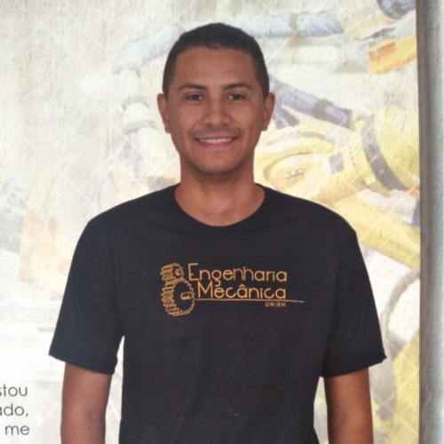

Com atividades presenciais e online, mentorias individuais
e desafios práticos, a trybe é a escola do futuro e para o futuro
que acelra sua carreira en desenvolvimento de software em até 12 meses
E o melhor!Você não paga nada até conseguir um trabalho
com uma remuneração de, no mínimo. R$
3.000,00 por mê.
Para você que já é estudante de computação , para você que se interessa pelo assunto e até mesmo para você que está pensando em mudar de carreira e ainda não conhece nada. A Trybe funciona para qualquer pessoa que queira uma carreira de sucesso em tecnologia. E QUE TENHA MUITA VONTADE E DEDICAÇÃO!

"Eu trabalho com Marketing e não tinha nenhuma formação ou experiência na área e consegui entrar na Trybe para me tornar desenvolvedor de software." Conrado Medeiros Aluno da Turma de Setembro - BH
"Eu não sabia nada de programação! Estudei os conteúdos gratuitos disponibilizados, consegui fazer o processo e passar. Estou aqui firme e forte para conseguir virar um desenvolvedor." Gabriel dos Santos Aluno da Turma de Setembro - BH

"Sou estudante de
Engenharia Química
e entrei na Trybe sem
nenhuma experiência
na área e estou
animado para me
tornar desenvolvedor."
Anderson Bolivar
Aluno da Turma de
Setembro - BH

Fundamos a Trybe porque acreditamos que qualquer pessoa que tenha muita vontade de vencer, independente da formação ou da condição financeira, é capaz de ter uma carreira de sucesso.
Matheus Goyas,
CEO e Co-fundador
da Trybe

Temos a premissa de fazer os estudantes viverem na prática desafios idênticos aos enfrentados na vida real. Nosso compromisso é tão grande com o sucesso, que a Trybe só ganha se
os nossos estudantes estiverem ganhando bem.
João Duarte,
CTO e Co-fundador da Trybe
você que já é estudante de computação, para você que se interessa pelo assunto e até mesmo para você que está pensando em mudar de carreira e ainda não conhece nada. A Trybe funciona para qualquer pessoa que queira uma carreira de sucesso em tecnologia. E QUE TENHA MUITA VONTADE E DEDICAÇÃO!